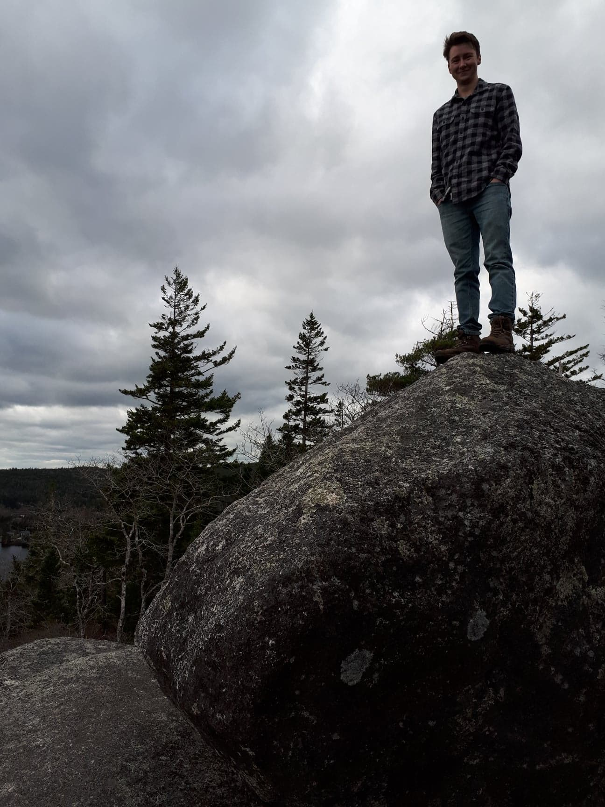

Hi, I'm Andy.
I am a software quality assurance specialist with the skillset and desire to transition to software development.
As of early June 2022 I will also have completed an Advanced Graduate Certificate in Remote Sensing, with the experience required to work in the GIS and Geospatial Science fields.
I'm ready to start the next chapter of my career :D
My Skills
Front-end Development
- HTML5
- CSS3 & Bootstrap
- JavaScript & JQuery
- Responsive web design
- UX-centered design
Back-end Development & Data
- Automation using Python
- GraphQL API development
- MySQL and database management
Remote Sensing
- Foundations in GIS
- Processing LiDAR data
- Satellite imagery analysis
- Processing aerial photography
- Aerial triangulation
- Photogrammetry
Software QA
- Jest using TypeScript
- Pytest for Python testing
- Manual testing and documentation
Soft Skills
- Self-motivated
- Quick learner
- Effective communicator
- Team player
Other
- Agile Methodology
- Git and source control
- Test-driven development
- GitLab and Jira experience
About Me
I am currently seeking full-time employment for June 2022 and am open to any of the following areas: Geospatial Science / GIS / Remote Sensing, Software Development, or Software Quality Assurance.
Keep reading...
While completing a Bachelor of Science degree in Biology at Saint Mary's University, I became increasingly interested in protecting our planet and its natural resources. Towards the end of my degree I focused on wildlife population studies, mainly though positional data and DNA analysis / population genetics, but decided that this wasn't quite the right fit for me long-term.
Working at the local technology start-up Bluelight Analytics I was able to explore a variety of directions, and build skills in user experience, scientific content creation, tech support, database querying, quality assurance, and software development.
This path led me to the Remote Sensing Graduate Certificate program at NSCC's Centre of Geographic Sciences where I have gained theoretical and hands-on experience in GIS, imagery analysis including aerial triangulation and photogrammetry, 3D data processing such as LiDAR point clouds, automating workflows using Python, and database management, among others.
See less...